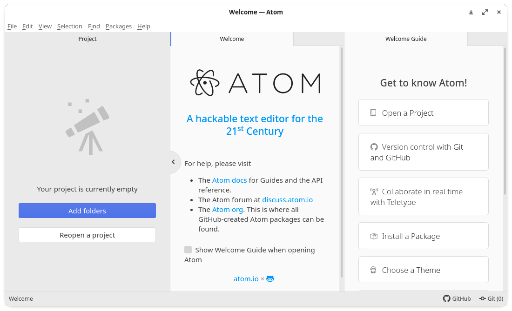
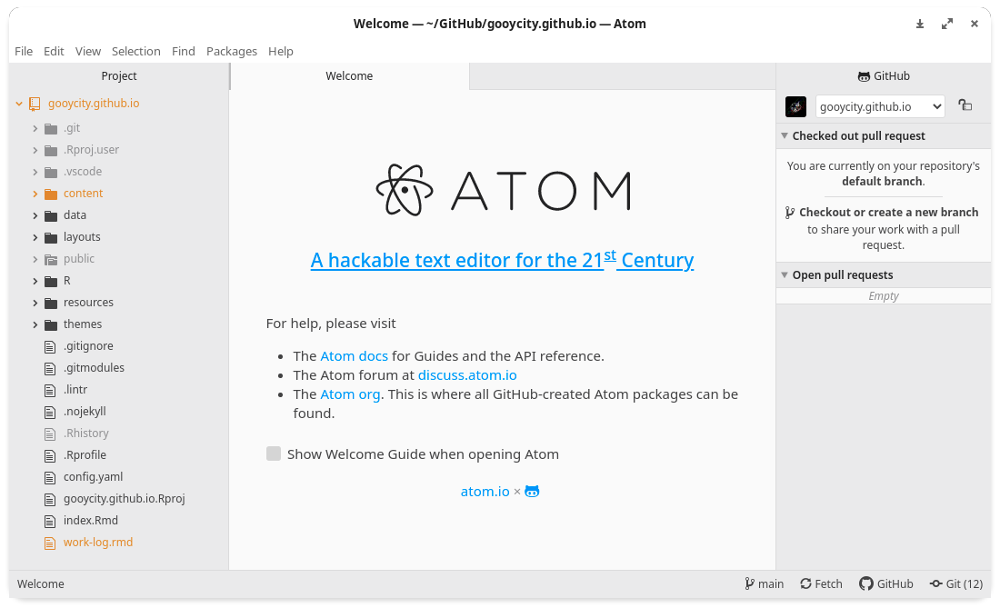
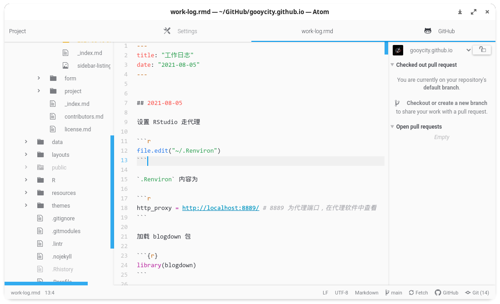
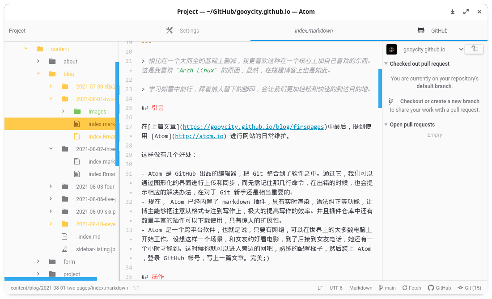
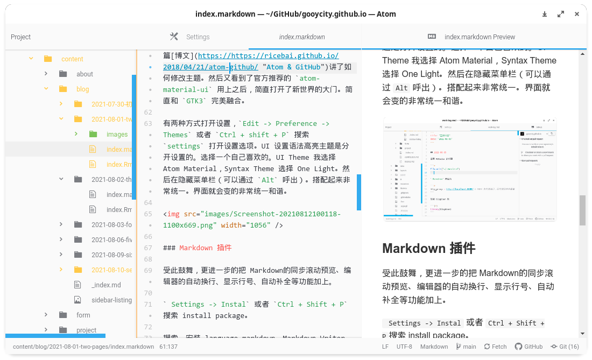

配置 Atom 以维护 GitHub Pages
相比在一个大而全的基础上删减，我更喜欢这种在一个核心上加自己喜欢的东西。这是我喜欢
Arch Linux的原因，显然，在搭建博客上也是如此。
学习如雪中前行，踩着前人留下的脚印，会让我们更加轻松和快速的到达目的地。
引言
这样做有几个好处：
- Atom 是 GitHub 出品的编辑器，把 Git 整合到了软件之中。通过它，我们可以通过图形化的界面进行上传和同步，而无需记住那几行命令，在出错的时候，也会提示相应的解决办法，在对于 Git 新手还是相当重要的。
- 现在， Atom 已经内置了 markdown 插件，具有实时渲染，语法纠正等功能，让博主能够把注意从格式专注到写作上，极大的提高写作的效率。并且插件仓库中还有数量丰富的插件可以下载使用，具有惊人的扩展性。
- Atom 是一个跨平台软件，也就是说，只要有网络，可以在世界上的大多数电脑上开始工作。设想这样一个场景，和女友约好看电影，到了后接到女友电话，她还有一个小时才能到。这时候你就可以进入旁边的网吧，熟练的配置梯子，然后装上 Atom，登录 GitHub 帐号，写上一篇文章。完美;)
操作
安装，如果是 Arch Linux 可以在 Terminal 中执行
1sudo pacman -S atom
安装后点击桌面图标，或者终端中执行 atom 打开 Atom，首次安装我们可以看到如下界面。

通过点击 Open a Project 或 Add folders。打开我们网站的本地库，如果库中包含 .git 文件夹，Atom 会自动配置你的 GitHub 登录信息。相当方便。

其实出场配置的 Atom 提供的功能已经满足了我们维护网站的所有需要：创建和编辑、美化、本地预览、上传与部署。为了更有效率的写作和部署博客，我们进行
我们需要达到以下目的：
- markdown 的语法高亮、语法检查、实时预览（渲染）等功能；
- 结合 jekyll 实现通过鼠标就能创建和发布文章；
- 一个好看的界面 UI；
- 通过这个过程了解 Atom 的基本操作。
UI
作为一个 fresher ，配置一个软件，UI 是第一步，如果视觉上没有直观上改变，就不会觉察到配置了什么。本来已经失望，打算在使用中配置，但没想到随手发现的一篇博文讲了如何修改主题。然后又看到了官方推荐的 atom-material-ui 用上之后，简直打开了新世界的大门。简直和 GTK3 完美融合。
有两种方式打开设置，Edit -> Preference -> Themes 或者 Ctrl + shift + P 搜索 settings 打开设置选项。UI 设置语法高亮主题是分开设置的。选择一个自己喜欢的。UI Theme 我选择 Atom Material，Syntax Theme 选择 One Light。然后在隐藏菜单栏（可以通过 Alt 呼出）。搭配起来非常统一。界面就会变的非常统一和谐。

Markdown 插件
受此鼓舞，更进一步的把 Markdown的同步滚动预览、编辑器的自动换行、显示行号、自动补全等功能加上。
Settings -> Instal 或者 Ctrl + Shift + P搜索 install package。
搜索，安装 language-markdown、Markdown Writer、markdown-preview-plus。
- 其中 language-markdown 通过文件的扩展名，识别
.md文件，为我们提供 markdown 语法的高亮提示。

- markdown-preview-plus 是一个非常棒的 markdown 实时预览插件，提供了多种主题。并且有同步滑轮功能。非常方便。

- markdown-Writer 是一个非常棒的插件，将 jekyll、Hugo 等网站部署工具的流程整合进 Atom 中，实现图形化界面创建和发布文章。强烈推荐。

最后一点话
Atom 具有丰富的插件配置，每个人可以按照自己的喜好，配置属于自己的 Atom 编辑器。甚至是类似于 RStudio 的 R-IDE。
附
我的注意力可能有点问题。在配置 Atom 之前，忽然脑海中闪现一个想法“要是桌面上能有个一直显示 To-do List，有没有其他多余的功能就好了”。花了一个多小时，还真让我找到了😂。在一篇博文中看到了 Xpad 这款便签软件。完全符合自己的想法，简单、简洁、与 Gnome 完美融合。